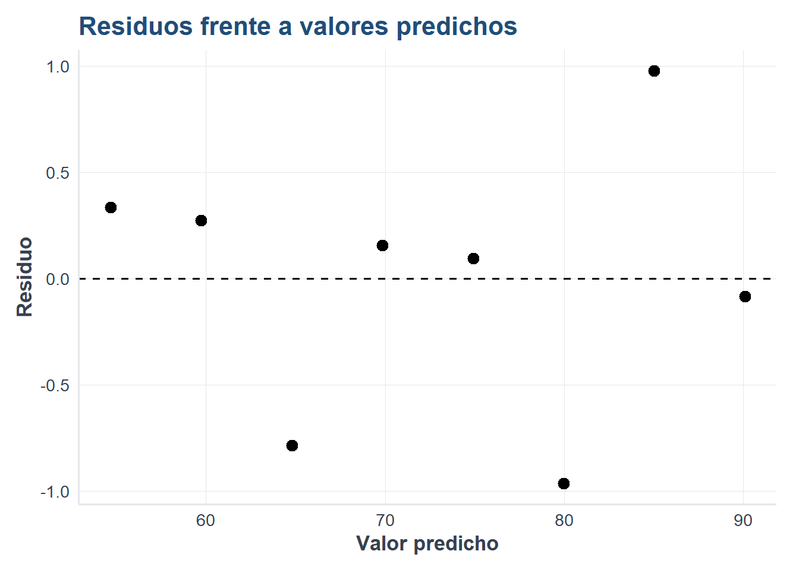
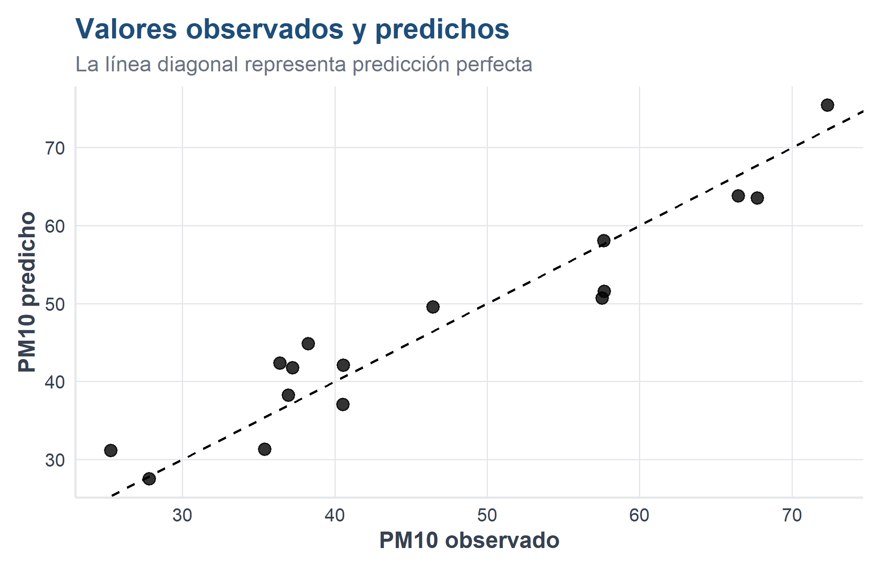

interpretar una relación lineal entre una variable respuesta y una variable explicativa;
ajustar una regresión lineal simple en R;
construir e interpretar un modelo de regresión lineal múltiple;
evaluar el ajuste mediante \(R^2\), \(R^2\) ajustado, RMSE y análisis de residuos;
reconocer cuándo la regresión lineal no es apropiada.
4.2 ¿Por qué estudiar regresión lineal en un libro de clasificación?
La regresión lineal no es un algoritmo de clasificación: su respuesta es numérica y continua. Sin embargo, es una base fundamental del aprendizaje supervisado porque introduce ideas que reaparecen en otros modelos: función de predicción, coeficientes, error, ajuste, generalización y evaluación fuera de muestra.
Además, permite comprender mejor la regresión logística del capítulo siguiente. Ambos modelos construyen una combinación de variables explicativas, aunque difieren en la naturaleza de la respuesta y en la función utilizada para obtener la predicción (James et al. 2021).
NotaIdea central
En regresión lineal se predice una cantidad, por ejemplo el número mensual de accidentes. En clasificación se predice una categoría, por ejemplo si un accidente tuvo víctimas o solo daños.
4.3 Regresión lineal simple
La regresión lineal simple relaciona una variable respuesta \(Y\) con una sola variable explicativa \(X\):
Warning: package 'ggplot2' was built under R version 4.5.3
source("util_graficas.R")ggplot(datos_estudio, aes(x = horas, y = calificacion)) +geom_point(size =3) +geom_smooth(method ="lm", se =TRUE) +labs(title ="Horas de estudio y calificación",subtitle ="Ejemplo de una relación aproximadamente lineal",x ="Horas de estudio",y ="Calificación" ) +tema_libro()
La pendiente indica cuántos puntos cambia, en promedio, la calificación por cada hora adicional de estudio. La ordenada al origen es necesaria matemáticamente, aunque no siempre tenga una interpretación práctica dentro del rango observado.
El intervalo de predicción es más amplio que un intervalo para la media porque considera tanto la incertidumbre del modelo como la variabilidad individual.
ggplot(diagnostico_simple, aes(x = predicho, y = residuo)) +geom_hline(yintercept =0, linetype =2) +geom_point(size =3) +labs(title ="Residuos frente a valores predichos",x ="Valor predicho",y ="Residuo" ) +tema_libro()

Una nube sin patrón claro alrededor de cero es compatible con una relación lineal razonable. Curvaturas, forma de embudo o puntos extremos sugieren revisar el modelo.
4.11 Regresión lineal múltiple
La regresión múltiple incorpora varias variables explicativas:
Cada coeficiente representa el cambio esperado en la respuesta cuando la variable correspondiente aumenta una unidad, manteniendo constantes las demás variables.
Por ejemplo, el coeficiente de velocidad_viento estima el cambio promedio de PM10 asociado con un aumento de una unidad en la velocidad del viento, manteniendo constantes la temperatura y el tráfico.
AdvertenciaAsociación no significa causalidad
Un coeficiente estadísticamente significativo no demuestra por sí solo una relación causal. La causalidad requiere diseño, conocimiento sustantivo y control adecuado de variables de confusión.
4.15 Separar entrenamiento y prueba
Evaluar el modelo con los mismos datos usados para ajustarlo produce una visión demasiado optimista. Por ello se separan datos de entrenamiento y prueba.
comparacion_regresion <-data.frame(observado = prueba_reg$pm10,predicho = prediccion_reg)ggplot(comparacion_regresion, aes(x = observado, y = predicho)) +geom_point(size =3, alpha =0.8) +geom_abline(slope =1, intercept =0, linetype =2) +labs(title ="Valores observados y predichos",subtitle ="La línea diagonal representa predicción perfecta",x ="PM10 observado",y ="PM10 predicho" ) +tema_libro()

4.18 Aplicación con datos ATUS agregados
En ATUS cada fila corresponde a un accidente. La base preparada del libro conserva las variables necesarias para los algoritmos de clasificación, pero no incluye entidad ni municipio. Por ello, en este ejemplo los registros se agregan por mes y se modela el número mensual de accidentes registrados.
library(readr)
Warning: package 'readr' was built under R version 4.5.3
Adjuntando el paquete: 'readr'
The following object is masked from 'package:scales':
col_factor
library(dplyr)
Warning: package 'dplyr' was built under R version 4.5.3
Adjuntando el paquete: 'dplyr'
The following objects are masked from 'package:stats':
filter, lag
The following objects are masked from 'package:base':
intersect, setdiff, setequal, union
ruta_atus_ml <-"datos/atus_ml_preparado.csv"if (!file.exists(ruta_atus_ml)) {stop(paste("No se encontró datos/atus_ml_preparado.csv.","Ejecute primero la celda de preparación automática." ) )}atus_reg <-read_csv( ruta_atus_ml,show_col_types =FALSE)names(atus_reg)
Call:
lm(formula = accidentes ~ MES + tipos_accidente + hora_promedio +
proporcion_fin_semana, data = atus_mensual)
Residuals:
Min 1Q Median 3Q Max
-2402.87 -610.94 75.52 707.04 2319.88
Coefficients: (1 not defined because of singularities)
Estimate Std. Error t value Pr(>|t|)
(Intercept) 71520.81 93274.17 0.767 0.465
MES 65.83 140.08 0.470 0.651
tipos_accidente NA NA NA NA
hora_promedio -2749.42 6808.57 -0.404 0.697
proporcion_fin_semana -6359.05 17099.04 -0.372 0.720
Residual standard error: 1487 on 8 degrees of freedom
Multiple R-squared: 0.08946, Adjusted R-squared: -0.252
F-statistic: 0.262 on 3 and 8 DF, p-value: 0.8509
AdvertenciaLimitación del ejemplo
El número de accidentes es una variable de conteo. La regresión lineal se utiliza aquí con fines didácticos; en un estudio formal podrían ser más apropiados modelos de Poisson o binomial negativa. Esta comparación ayuda a comprender que la elección del algoritmo depende de la naturaleza de la respuesta.
4.21 Supuestos principales
La interpretación inferencial tradicional de la regresión lineal se apoya en varios supuestos:
relación aproximadamente lineal;
errores independientes;
varianza aproximadamente constante;
ausencia de colinealidad extrema;
normalidad aproximada de los errores cuando se construyen pruebas e intervalos.
Los supuestos deben analizarse mediante gráficas, conocimiento del problema y medidas diagnósticas; no deben tratarse como una lista mecánica.
4.22 Diferencias entre regresión lineal y logística
Característica
Regresión lineal
Regresión logística
Respuesta
Numérica continua
Categórica binaria
Salida directa
Cualquier número real
Probabilidad entre 0 y 1
Función usual
Identidad
Logística
Evaluación
RMSE, MAE, \(R^2\)
Matriz de confusión, sensibilidad, especificidad, AUC
Ejemplo
Predecir PM10
Clasificar accidente con víctimas
4.23 Actividades para el lector
Modifique el ejemplo simple y prediga la calificación para 7.5 horas de estudio.
Retire una variable del modelo ambiental y compare el \(R^2\) ajustado y el RMSE.
Añada una interacción entre temperatura y velocidad del viento.
Analice los residuos del modelo múltiple.
Explique por qué no sería correcto utilizar regresión lineal ordinaria para predecir directamente una categoría como Con víctimas o Solo daños.
Compare conceptualmente el modelo ATUS de este capítulo con la regresión logística del capítulo siguiente.
4.24 Conclusiones
La regresión lineal simple explica una respuesta cuantitativa mediante una variable y la regresión múltiple permite considerar varios factores simultáneamente. Su valor en este libro no se limita a la predicción numérica: proporciona el lenguaje básico para comprender coeficientes, errores, validación y generalización, conceptos que continuarán apareciendo en los algoritmos de clasificación.
4.25 Materiales complementarios del capítulo
Recurso
Utilidad
Abrir o reproducir
Descargar
Video explicativo
Explicación audiovisual de la regresión lineal simple y múltiple.
James, Gareth, Daniela Witten, Trevor Hastie, y Robert Tibshirani. 2021. An Introduction to Statistical Learning: with Applications in R. 2.ª ed. Springer. https://doi.org/10.1007/978-1-0716-1418-1.
Montgomery, Douglas C., Elizabeth A. Peck, y G. Geoffrey Vining. 2021. Introduction to Linear Regression Analysis. 6.ª ed. Wiley.